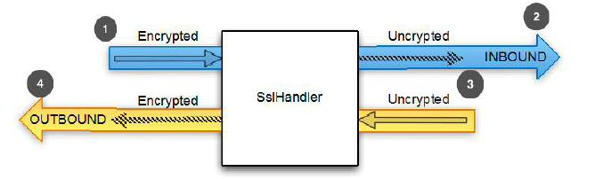
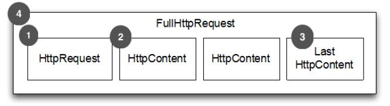
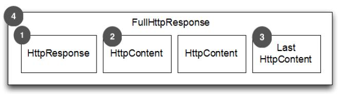
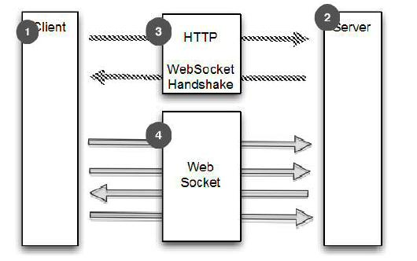
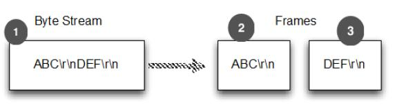
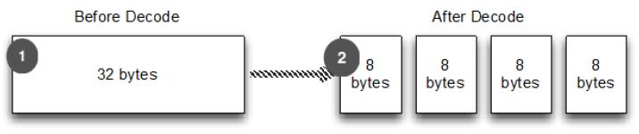
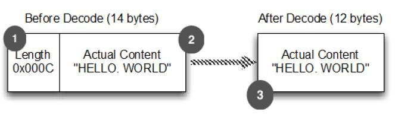

内置的ChannelHandler 和 Codecs
Table of Contents
本章介绍：
- 使用 SSL/TLS 加密 Netty 程序
- 构建 Netty HTTP/HTTPS 程序
- 处理空闲连接和超时
- 解码分隔符和基于长度的协议
- 写大数据
- 序列化数据
Netty 提供了很多共同协议的编解码器和处理程序,几乎可以”开箱即用“的使用他们，而无需花在相当乏味的基础设施问题。在这一章里，将探索这些工具和他们的好处。这包括支持 SSL/TLS, WebSocket 和 谷歌SPDY，通过数据压缩使 HTTP 有更好的性能
使用 SSL/TLS 加密 Netty 程序
今天数据隐私是一个十分关注的问题，作为开发人员需要准备好解决这个问题。至少需要熟悉加密协议 SSL 和 TLS 等之上的其他协议实现数据安全。作为一个 HTTPS 网站的用户显然更安全。当然这些协议是广泛不基于 http 的应用程序，例如安全SMTP(SMTPS)邮件服务，甚至关系数据库系统
SslHandler
为了支持 SSL/TLS，Java 提供了 javax.net.ssl API 的类SslContext 和 SslEngine 使它相对简单的实现解密和加密。Netty 的利用该 API 命名 SslHandler 的 ChannelHandler 实现，有一个内部 SslEngine 做实际的工作
图8.1显示了一个使用 SslHandler 数据流图：

- 加密的入站数据被 SslHandler 拦截，并被解密
- 前面加密的数据被 SslHandler 解密
- 平常数据传过 SslHandler
- SslHandler 加密数据并它传递出站
实例
public class SslChannelInitializer extends ChannelInitializer<Channel> { private final SslContext context; private final boolean startTls; public SslChannelInitializer(SslContext context, boolean client, boolean startTls) { //1 使用构造函数来传递 SSLContext ，startTls 是否启用 this.context = context; this.startTls = startTls; } @Override protected void initChannel(Channel ch) throws Exception { SSLEngine engine = context.newEngine(ch.alloc()); //2 从 SslContext 获得一个新的 SslEngine 。给每个 SslHandler 实例使用一个新的 SslEngine engine.setUseClientMode(client); //3 设置 SslEngine 是 client 或者是 server 模式 ch.pipeline().addFirst("ssl", new SslHandler(engine, startTls)); //4 添加 SslHandler 到 pipeline 作为第一个处理器 } }
在大多数情况下,SslHandler 将成为 ChannelPipeline 中的第一个 ChannelHandler 。这将确保所有其他 ChannelHandler 应用他们的逻辑到数据后加密后才发生，从而确保他们的变化是安全的
方法
SslHandler 有很多有用的方法，如表8.1所示。例如，在握手阶段两端相互验证，商定一个加密方法。您可以配置 SslHandler 修改其行为或提供 在SSL/TLS 握手完成后发送通知，这样所有数据都将被加密：
| 名称 | 描述 |
| setHandshakeTimeout(…) setHandshakeTimeoutMillis(…) getHandshakeTimeoutMillis() | Set and get the timeout, after which the handshake ChannelFuture is notified of failure |
| setCloseNotifyTimeout(…) setCloseNotifyTimeoutMillis(…) getCloseNotifyTimeoutMillis() | Set and get the timeout after which the close notify will time out and the connection will close. This also results in having the close notify ChannelFuture fail |
| handshakeFuture() | Returns a ChannelFuture that will be notified once the handshake is complete. If the handshake was done before it will return a ChannelFuture that contains the result of the previous handshake |
| close(…) | Send the close_notify to request close and destroy the underlying SslEngine |
构建 Netty HTTP/HTTPS 应用
HTTP/HTTPS 是最常见的一种协议，在智能手机里广泛应用。虽然每家公司都有一个主页，您可以通过HTTP或HTTPS访问。这不是它唯一的使用。许多组织通过 HTTP(S) 公开 WebService API ，旨在用于缓解独立的平台带来的弊端 。让我们看一下 Netty 提供的 ChannelHandler，是如何允许您使用 HTTP 和 HTTPS 而无需编写自己的编解码器
Http应用
Codec
HTTP 是请求-响应模式，客户端发送一个 HTTP 请求，服务就响应此请求。Netty 提供了简单的编码、解码器来简化基于这个协议的开发工作。图8.2显示 HTTP 请求是如何消费的：

- HTTP Request 第一部分是包含的头信息
- HttpContent 里面包含的是数据，可以后续有多个 HttpContent 部分
- LastHttpContent 标记是 HTTP request 的结束，同时可能包含头的尾部信息
- 完整的 HTTP request
图8.3显示 HTTP 响应的是如何生产的：

- HTTP response 第一部分是包含的头信息
- HttpContent 里面包含的是数据，可以后续有多个 HttpContent 部分
- LastHttpContent 标记是 HTTP response 的结束，同时可能包含头的尾部信息
- 完整的 HTTP response
如图8.2和8.3所示的 HTTP 请求/响应可能包含不止一个数据部分，它总是终止于 LastHttpContent 部分 。FullHttpRequest 和 FullHttpResponse 消息是特殊子类型，分别表示一个完整的请求和响应。所有类型的 HTTP 消息(FullHttpRequest ，LastHttpContent )实现 HttpObject 接口：
| 名称 | 描述 |
| HttpRequestEncoder | Encodes HttpRequest , HttpContent and LastHttpContent messages to bytes |
| HttpResponseEncoder | Encodes HttpResponse, HttpContent and LastHttpContent messages to bytes |
| HttpRequestDecoder | Decodes bytes into HttpRequest, HttpContent and LastHttpContent messages |
| HttpResponseDecoder | Decodes bytes into HttpResponse, HttpContent and LastHttpContent messages |
支持Http协议
只要添加正确的 ChannelHandler 到 ChannelPipeline 中就可以支持http协议
public class HttpPipelineInitializer extends ChannelInitializer<Channel> { private final boolean client; public HttpPipelineInitializer(boolean client) { this.client = client; } @Override protected void initChannel(Channel ch) throws Exception { ChannelPipeline pipeline = ch.pipeline(); if (client) { pipeline.addLast("decoder", new HttpResponseDecoder()); //1 client: 添加 HttpResponseDecoder 用于处理来自 server 响应 pipeline.addLast("encoder", new HttpRequestEncoder()); //2 client: 添加 HttpRequestEncoder 用于发送请求到 server } else { pipeline.addLast("decoder", new HttpRequestDecoder()); //3 server: 添加 HttpRequestDecoder 用于接收来自 client 的请求 pipeline.addLast("encoder", new HttpResponseEncoder()); //4 server: 添加 HttpResponseEncoder 用来发送响应给 client } } }
消息聚合
安装 ChannelPipeline 中的初始化之后，能够对不同 HttpObject 消息进行操作。但由于 HTTP 请求和响应可以由许多部分组合而成，需要聚合他们形成完整的消息。为了消除这种繁琐任务， Netty 提供了一个聚合器，合并消息部件到 FullHttpRequest 和 FullHttpResponse 消息。这样总是能够看到完整的消息内容
这个操作有一个轻微的成本：消息段需要缓冲，直到完全可以将消息转发到下一个 ChannelInboundHandler 管道
但好处是：不必担心消息碎片
实现自动聚合只需添加另一个 ChannelHandler 到 ChannelPipeline。下面显示了这是如何实现的：
public class HttpAggregatorInitializer extends ChannelInitializer<Channel> { private final boolean client; public HttpAggregatorInitializer(boolean client) { this.client = client; } @Override protected void initChannel(Channel ch) throws Exception { ChannelPipeline pipeline = ch.pipeline(); if (client) { pipeline.addLast("codec", new HttpClientCodec()); //1 client: 添加 HttpClientCodec } else { pipeline.addLast("codec", new HttpServerCodec()); //2 server: 添加 HttpServerCodec } pipeline.addLast("aggegator", new HttpObjectAggregator(512 * 1024)); //3 添加 HttpObjectAggregator 到 ChannelPipeline, 使用最大消息值是 512kb } }
压缩
使用 HTTP 时建议压缩数据以减少传输流量，压缩数据会增加 CPU 负载，现在的硬件设施都很强大，大多数时候压缩数据时一个好主意。Netty 支持 gzip 和 deflate ，为此提供了两个 ChannelHandler 实现分别用于压缩和解压
HTTP Request Header
GET /encrypted-area HTTP/1.1 Host: www.example.com Accept-Encoding: gzip, deflate
public class HttpAggregatorInitializer extends ChannelInitializer<Channel> { private final boolean isClient; public HttpAggregatorInitializer(boolean isClient) { this.isClient = isClient; } @Override protected void initChannel(Channel ch) throws Exception { ChannelPipeline pipeline = ch.pipeline(); if (isClient) { pipeline.addLast("codec", new HttpClientCodec()); //1 client: 添加 HttpClientCodec pipeline.addLast("decompressor",new HttpContentDecompressor()); //2 client: 添加 HttpContentDecompressor 用于处理来自服务器的压缩的内容 } else { pipeline.addLast("codec", new HttpServerCodec()); //3 server: HttpServerCodec pipeline.addLast("compressor",new HttpContentCompressor()); //4 server: HttpContentCompressor 用于压缩来自 client 支持的 HttpContentCompressor } } }
使用 HTTPS
启用 HTTPS，只需添加 SslHandler
public class HttpsCodecInitializer extends ChannelInitializer<Channel> { private final SslContext context; private final boolean client; public HttpsCodecInitializer(SslContext context, boolean client) { this.context = context; this.client = client; } @Override protected void initChannel(Channel ch) throws Exception { ChannelPipeline pipeline = ch.pipeline(); SSLEngine engine = context.newEngine(ch.alloc()); pipeline.addFirst("ssl", new SslHandler(engine)); //1 添加 SslHandler 到 pipeline 来启用 HTTPS if (client) { pipeline.addLast("codec", new HttpClientCodec()); //2 client: 添加 HttpClientCodec } else { pipeline.addLast("codec", new HttpServerCodec()); //3 server: 添加 HttpServerCodec } } }
WebSocket
协议
Http 是不错的协议，但是如果需要实时发布信息怎么做？有个做法就是客户端一直轮询请求服务器，这种方式虽然可以达到目的，但是其缺点很多，也不是优秀的解决方案，为了解决这个问题，便出现了 WebSocket
WebSocket 允许数据双向传输，而不需要请求-响应模式。早期的WebSocket 只能发送文本数据，然后现在不仅可以发送文本数据，也可以发送二进制数据，这使得可以使用 WebSocket 构建你想要的程序
WebSocket 规范及其实现是为了一个更有效的解决方案。简单的说, 一个WebSocket 提供一个 TCP 连接两个方向的交通。结合 WebSocket API 它提供了一个替代 HTTP 轮询双向通信从页面到远程服务器
WebSocket 提供真正的双向客户机和服务器之间的数据交换。 虽然最早实现仅限于文本数据，但现在不再是这样，WebSocket可以用于任意数据,就像一个正常的套接字
图8.4给出了一个通用的 WebSocket 协议，在这种情况下的通信开始于普通 HTTP ，并 升级 为双向 WebSocket：

- Client (HTTP) 与 Server 通讯
- Server (HTTP) 与 Client 通讯
- Client 通过 HTTP(s) 来进行 WebSocket 握手，并等待确认
- 连接协议升级至 WebSocket
WebSocketFrame
添加应用程序支持 WebSocket，只需要 添加适当的客户端或服务器端WebSocket ChannelHandler 到管道 。这个类将处理特殊 WebSocket 定义的消息类型，称为 帧 (Frame)。如表8.3所示，这些可以归类为 数据 和 控制 帧：
| 名称 | 描述 |
| BinaryWebSocketFrame | Data frame: binary data |
| TextWebSocketFrame | Data frame: text data |
| ContinuationWebSocketFrame | Data frame: text or binary data that belongs to a previous BinaryWebSocketFrame or TextWebSocketFrame |
| CloseWebSocketFrame | Control frame: a CLOSE request, close status code and a phrase |
| PingWebSocketFrame | Control frame: requests the send of a PongWebSocketFrame |
| PongWebSocketFrame | Control frame: sent as response to a PingWebSocketFrame |
WebSocketServerProtocolHandler
由于 Netty 的主要是一个服务器端技术重点在这里创建一个 WebSocket server 。下面使用 WebSocketServerProtocolHandler 提出了一个简单的例子。该类处理协议升级握手以及三个 控制帧 Close, Ping 和 Pong。Text 和 Binary 数据帧将被传递到下一个处理程序进行处理：
public class WebSocketServerInitializer extends ChannelInitializer<Channel> { @Override protected void initChannel(Channel ch) throws Exception { ch.pipeline().addLast( new HttpServerCodec(), new HttpObjectAggregator(65536), //1 添加 HttpObjectAggregator 用于提供在握手时聚合 HttpRequest new WebSocketServerProtocolHandler("/websocket"), //2 添加 WebSocketServerProtocolHandler 用于处理好握手请求。请求是发送到"/websocket." 端点，当升级完成后，它将会处理Ping, Pong 和 Close 帧 new TextFrameHandler(), //3 TextFrameHandler 将会处理 TextWebSocketFrames new BinaryFrameHandler(), //4 BinaryFrameHandler 将会处理 BinaryWebSocketFrames new ContinuationFrameHandler()); //5 ContinuationFrameHandler 将会处理ContinuationWebSocketFrames } public static final class TextFrameHandler extends SimpleChannelInboundHandler<TextWebSocketFrame> { @Override public void channelRead0(ChannelHandlerContext ctx, TextWebSocketFrame msg) throws Exception { // Handle text frame } } public static final class BinaryFrameHandler extends SimpleChannelInboundHandler<BinaryWebSocketFrame> { @Override public void channelRead0(ChannelHandlerContext ctx, BinaryWebSocketFrame msg) throws Exception { // Handle binary frame } } public static final class ContinuationFrameHandler extends SimpleChannelInboundHandler<ContinuationWebSocketFrame> { @Override public void channelRead0(ChannelHandlerContext ctx, ContinuationWebSocketFrame msg) throws Exception { // Handle continuation frame } } }
加密 WebSocket 只需插入 SslHandler 到作为 pipline 第一个 ChannelHandler
SPDY
SPDY 是Google 开发的基于 TCP 的应用层协议，用以最小化网络延迟，提升网络速度，优化用户的网络使用体验。SPDY 并不是一种用于替代 HTTP 的协议，而是对 HTTP 协议的增强。SPDY 实现技术：
- 压缩报头
- 加密所有
- 多路复用连接
- 提供支持不同的传输优先级
SPDY 主要有5个版本：
- 1: 初始化版本，但没有使用
- 2: 新特性，包含服务器推送
- 3: 新特性包含流控制和更新压缩
- 3.1: 会话层流程控制
- 4.0: 流量控制，并与 HTTP 2.0 更加集成
Netty 支持 版本 2 和 3 （包含3.1）的支持。这些版本被广泛应用，可以支持更多的用户
空闲连接以及超时
检测空闲连接和超时是为了及时释放资源。常见的方法：发送消息用于测试一个不活跃的连接来，通常称为 心跳 到远端来确定它是否还活着。(一个更激进的方法是简单地断开那些指定的时间间隔的不活跃的连接)
处理空闲连接是一项常见的任务，Netty 提供了几个 ChannelHandler 实现此目的：
| 名称 | 描述 |
| IdleStateHandler | 如果连接闲置时间过长，则会触发 IdleStateEvent 事件。在 ChannelInboundHandler 中可以覆盖 userEventTriggered(…) 方法来处理 IdleStateEvent |
| ReadTimeoutHandler | 在指定的时间间隔内没有接收到入站数据则会抛出 ReadTimeoutException 并关闭 Channel。ReadTimeoutException 可以通过覆盖 ChannelHandler 的 exceptionCaught(…) 方法检测到 |
| WriteTimeoutHandler | WriteTimeoutException 可以通过覆盖 ChannelHandler 的 exceptionCaught(…) 方法检测到 |
IdleStateHandler
当超过60秒没有数据收到时，就会得到通知，此时就发送心跳到远端，如果没有回应，连接就关闭
public class IdleStateHandlerInitializer extends ChannelInitializer<Channel> { @Override protected void initChannel(Channel ch) throws Exception { ChannelPipeline pipeline = ch.pipeline(); pipeline.addLast(new IdleStateHandler(0, 0, 60, TimeUnit.SECONDS)); //1 IdleStateHandler 将通过 IdleStateEvent 调用 userEventTriggered ，如果连接没有接收或发送数据超过60秒钟 pipeline.addLast(new HeartbeatHandler()); } public static final class HeartbeatHandler extends ChannelInboundHandlerAdapter { private static final ByteBuf HEARTBEAT_SEQUENCE = Unpooled.unreleasableBuffer( Unpooled.copiedBuffer("HEARTBEAT", CharsetUtil.ISO_8859_1)); //2 心跳发送到远端 @Override public void userEventTriggered(ChannelHandlerContext ctx, Object evt) throws Exception { if (evt instanceof IdleStateEvent) { ctx.writeAndFlush(HEARTBEAT_SEQUENCE.duplicate()) .addListener(ChannelFutureListener.CLOSE_ON_FAILURE); //3 发送的心跳并添加一个侦听器，如果发送操作失败将关闭连接 } else { super.userEventTriggered(ctx, evt); //4 事件不是一个 IdleStateEvent 的话，就将它传递给下一个处理程序 } } } }
这个例子说明了如何使用 IdleStateHandler 测试远端是否还活着，如果不是就关闭连接释放资源
解码分隔符和基于长度的协议
使用 Netty 时会遇到需要解码以分隔符和长度为基础的协议
分隔符协议
经常需要处理分隔符协议或创建基于它们的协议，例如SMTP、POP3、IMAP、Telnet等等。Netty 附带的解码器可以很容易的提取一些序列分隔：
| 名称 | 描述 |
| DelimiterBasedFrameDecoder | 接收ByteBuf由一个或多个分隔符拆分，如NUL或换行符 |
| LineBasedFrameDecoder | 接收ByteBuf以分割线结束，如"\n"和"\r\n" |
LineBasedFrameDecoder
下图显示了使用 \r\n 分隔符的处理：

- 字节流
- 第一帧
第二帧
public class LineBasedHandlerInitializer extends ChannelInitializer<Channel> { @Override protected void initChannel(Channel ch) throws Exception { ChannelPipeline pipeline = ch.pipeline(); pipeline.addLast(new LineBasedFrameDecoder(65 * 1024)); //1 添加一个 LineBasedFrameDecoder 用于提取帧并把数据包转发到下一个管道中的处理程序,在这种情况下就是 FrameHandler pipeline.addLast(new FrameHandler()); //2 添加 FrameHandler 用于接收帧 } public static final class FrameHandler extends SimpleChannelInboundHandler<ByteBuf> { @Override public void channelRead0(ChannelHandlerContext ctx, ByteBuf msg) throws Exception { //3 每次调用都需要传递一个单帧的内容 // Do something with the frame } } }
CmdDecoder
使用 LineBasedFrameDecoder 可以方便处理特定分隔符作为数据结构体的这类情况：
- 传入的数据流是一系列的帧，每个由换行（ \n ）分隔
- 每帧包括一系列项目，每个由单个空格字符分隔
- 一帧的内容代表一个 命令 ：一个名字后跟一些变量参数
下面代码显示了的实现的方式。定义以下类：
- 类 Cmd : 存储帧的内容，其中一个 ByteBuf 用于存名字，另外一个存参数
- 类 CmdDecoder : 从重写方法 decode() 中检索一行，并从其内容中构建一个 Cmd 的实例
- 类 CmdHandler : 从 CmdDecoder 接收解码 Cmd 对象和对它的一些处理
public class CmdHandlerInitializer extends ChannelInitializer<Channel> { @Override protected void initChannel(Channel ch) throws Exception { ChannelPipeline pipeline = ch.pipeline(); pipeline.addLast(new CmdDecoder(65 * 1024));//1 添加一个 CmdDecoder 到管道；将提取 Cmd 对象和转发到在管道中的下一个处理器 pipeline.addLast(new CmdHandler()); //2 添加 CmdHandler 将接收和处理 Cmd 对象 } public static final class Cmd { //3 存储帧的内容，其中一个 ByteBuf 用于存名字，另外一个存参数 private final ByteBuf name; private final ByteBuf args; public Cmd(ByteBuf name, ByteBuf args) { this.name = name; this.args = args; } public ByteBuf name() { return name; } public ByteBuf args() { return args; } } public static final class CmdDecoder extends LineBasedFrameDecoder { public CmdDecoder(int maxLength) { super(maxLength); } @Override protected Object decode(ChannelHandlerContext ctx, ByteBuf buffer) throws Exception { ByteBuf frame = (ByteBuf) super.decode(ctx, buffer); //4 super.decode() 通过结束分隔从 ByteBuf 提取帧 if (frame == null) { return null; //5 frame 是空时，则返回 null } int index = frame.indexOf(frame.readerIndex(), frame.writerIndex(), (byte) ' '); //6 找到第一个空字符的索引。首先是它的命令名；接下来是参数的顺序 return new Cmd(frame.slice(frame.readerIndex(), index), frame.slice(index +1, frame.writerIndex())); //7 从帧先于索引以及它之后的片段中实例化一个新的 Cmd 对象 } } public static final class CmdHandler extends SimpleChannelInboundHandler<Cmd> { @Override public void channelRead0(ChannelHandlerContext ctx, Cmd msg) throws Exception { // Do something with the command //8 处理通过管道的 Cmd 对象 } } }
基于长度的协议
基于长度的协议协议在帧头文件里定义了一个帧编码的长度，而不是结束位置用一个特殊的分隔符来标记。表8.6列出了 Netty 提供的两个解码器，用于处理这种类型的协议
| 名称 | 描述 |
| FixedLengthFrameDecoder | 提取固定长度 |
| LengthFieldBasedFrameDecoder | 读取头部长度并提取帧的长度 |
如下图所示，FixedLengthFrameDecoder 的操作是提取固定长度每帧8字节：

- 字节流 stream
- 4个帧，每个帧8个字节
大部分时候帧的大小被编码在头部，这种情况可以使用LengthFieldBasedFrameDecoder，它会读取头部长度并提取帧的长度。下图显示了它是如何工作的：

- 长度 0x000C (12) 被编码在帧的前两个字节
- 后面的12个字节就是内容
- 提取没有头文件的帧内容
LengthFieldBasedFrameDecoder
LengthFieldBasedFrameDecoder 提供了几个构造函数覆盖各种各样的头长字段配置情况。下面代码显示使用三个参数的构造函数是：
- maxFrameLength : 65 * 1024
- lengthFieldOffset : 0
- lengthFieldLength : 8
在这情况下，帧的长度被编码在帧的前8个字节：
public class LengthBasedInitializer extends ChannelInitializer<Channel> { @Override protected void initChannel(Channel ch) throws Exception { ChannelPipeline pipeline = ch.pipeline(); pipeline.addLast( new LengthFieldBasedFrameDecoder(65 * 1024, 0, 8)); //1 添加一个 LengthFieldBasedFrameDecoder ,用于提取基于帧编码长度8个字节的。帧 pipeline.addLast(new FrameHandler()); //2 添加一个 FrameHandler 用来处理每帧 } public static final class FrameHandler extends SimpleChannelInboundHandler<ByteBuf> { @Override public void channelRead0(ChannelHandlerContext ctx, ByteBuf msg) throws Exception { // Do something with the frame //3 处理帧数据 } } }
编写大型数据
由于网络的原因，如何有效的写大数据在异步框架是一个特殊的问题。因为写操作是非阻塞的，即便是在数据不能写出时，只是通知 ChannelFuture 完成了。当这种情况发生时，你必须停止写操作或面临内存耗尽的风险。所以写时会产生大量的数据，需要做好准备来处理的这种情况下缓慢的连接远端导致延迟释放内存的问题
拷贝文件到网络
考虑写一个文件的内容到网络
以前提到过 NIO 的 zero-copy 功能，用来消除移动一个文件的内容从文件系统到网络堆栈的复制步骤。这发生在 Netty 的核心，因此所有所需的应用程序代码是使用接口 FileRegion 的实现：通过 Channel 支持 zero-copy 文件传输的文件区域
下面演示了通过 zero-copy 将文件内容从 FileInputStream 创建 DefaultFileRegion 并写入 使用 Channel：
FileInputStream in = new FileInputStream(file); //1 获取 FileInputStream FileRegion region = new DefaultFileRegion(in.getChannel(), 0, file.length()); //2 创建一个新的 DefaultFileRegion 用于文件的完整长度 channel.writeAndFlush(region).addListener(new ChannelFutureListener() { //3 发送 DefaultFileRegion 并且注册一个 ChannelFutureListener @Override public void operationComplete(ChannelFuture future) throws Exception { if (!future.isSuccess()) { Throwable cause = future.cause(); //4 处理发送失败 // Do something } } });
拷贝文件到内存
看到的例子只适用于直接传输一个文件的内容，没有执行的数据应用程序的处理。在相反的情况下，将数据从文件系统复制到用户内存是必需的。可以使用 ChunkedWriteHandler。这个类提供了支持异步写大数据流不引起高内存消耗
这个关键是接口 ChunkedInput ，实现如下：
| 名称 | 描述 |
| ChunkedFile | 当你使用平台不支持 zero-copy 或者你需要转换数据，从文件中一块一块的获取数据 |
| ChunkedNioFile | 与 ChunkedFile 类似，处理使用了NIOFileChannel |
| ChunkedStream | 从 InputStream 中一块一块的转移内容 |
| ChunkedNioStream | 从 ReadableByteChannel 中一块一块的转移内容 |
ChunkedWriteHandler 实例
下面演示了使用 ChunkedWriteHandler 。 所示的类被实例化一个 File 和一个 SslContext，当 initChannel() 被调用来初始化显示的处理程序链的通道
当通道激活时，WriteStreamHandler 从文件一块一块的写入数据作为ChunkedStream。最后将数据通过 SslHandler 加密后传播
public class ChunkedWriteHandlerInitializer extends ChannelInitializer<Channel> { private final File file; private final SslContext sslCtx; public ChunkedWriteHandlerInitializer(File file, SslContext sslCtx) { this.file = file; this.sslCtx = sslCtx; } @Override protected void initChannel(Channel ch) throws Exception { ChannelPipeline pipeline = ch.pipeline(); pipeline.addLast(new SslHandler(sslCtx.createEngine()); //1 添加 SslHandler 到 ChannelPipeline. pipeline.addLast(new ChunkedWriteHandler());//2 添加 ChunkedWriteHandler 用来处理作为 ChunkedInput 传进的数据 pipeline.addLast(new WriteStreamHandler());//3 当连接建立时，WriteStreamHandler 开始写文件的内容 } public final class WriteStreamHandler extends ChannelInboundHandlerAdapter { //4 当连接建立时，channelActive() 触发使用 ChunkedInput 来写文件的内容 @Override public void channelActive(ChannelHandlerContext ctx) throws Exception { super.channelActive(ctx); ctx.writeAndFlush(new ChunkedStream(new FileInputStream(file))); } } }
使用的 ChunkedInput 实现，是被安装ChunkedWriteHandler 在管道中
序列化数据
JDK 提供了 ObjectOutputStream 和 ObjectInputStream 通过网络将原始数据类型和 POJO 进行序列化和反序列化。API并不复杂，可以应用到任何对象，支持 java.io.Serializable 接口。但它也不是非常高效的。在本节中将看到 Netty 所提供的
JDK 序列化
如果程序与端对端间的交互是使用 ObjectOutputStream 和 ObjectInputStream，并且主要面临的问题是兼容性，那么， JDK 序列化 是不错的选择。
下表列出了序列化类，Netty 提供了与 JDK 的互操作：
| 名称 | 描述 |
| CompatibleObjectDecoder | 该解码器使用 JDK 序列化，用于与非 Netty 进行互操作 |
| CompatibleObjectEncoder | 该编码器使用 JDK 序列化，用于与非 Netty 进行互操作 |
| ObjectDecoder | 基于 JDK 序列化来使用自定义序列化解码。外部依赖被排除在外时，提供了一个速度提升。否则选择其他序列化实现 |
| ObjectEncoder | 基于 JDK 序列化来使用自定义序列化编码。外部依赖被排除在外时，提供了一个速度提升。否则选择其他序列化实现 |
JBoss Marshalling 序列化
如果可以使用外部依赖 JBoss Marshalling 是个明智的选择。比 JDK 序列化快3倍且更加简练
JBoss Marshalling 是另一个序列化 API，修复的许多 JDK序列化 API 中发现的问题 它与 java.io.Serializable 完全兼容，并添加了一些新的可调参数和附加功能 所有这些都可插入通过工厂配置外部化，类/实例查找表，类决议，对象替换等等
下表展示了 Netty 支持 JBoss Marshalling 的编解码器：
| 名称 | 描述 |
| CompatibleMarshallingDecoder | 为了与使用 JDK 序列化的端对端间兼容 |
| CompatibleMarshallingEncoder | 为了与使用 JDK 序列化的端对端间兼容 |
| MarshallingDecoder | 使用自定义序列化用于解码，必须使用 MarshallingEncoder |
| MarshallingEncoder | 使用自定义序列化用于编码，必须使用 MarshallingDecoder |
实例
下面展示了使用 MarshallingDecoder 和 MarshallingEncoder：
public class MarshallingInitializer extends ChannelInitializer<Channel> { private final MarshallerProvider marshallerProvider; private final UnmarshallerProvider unmarshallerProvider; public MarshallingInitializer(UnmarshallerProvider unmarshallerProvider, MarshallerProvider marshallerProvider) { this.marshallerProvider = marshallerProvider; this.unmarshallerProvider = unmarshallerProvider; } @Override protected void initChannel(Channel channel) throws Exception { ChannelPipeline pipeline = channel.pipeline(); pipeline.addLast(new MarshallingDecoder(unmarshallerProvider)); pipeline.addLast(new MarshallingEncoder(marshallerProvider)); pipeline.addLast(new ObjectHandler()); } public static final class ObjectHandler extends SimpleChannelInboundHandler<Serializable> { @Override public void channelRead0(ChannelHandlerContext channelHandlerContext, Serializable serializable) throws Exception { // Do something } } }
ProtoBuf 序列化
ProtoBuf 来自谷歌，并且开源了。它使编解码数据更加紧凑和高效。它已经绑定各种编程语言,使它适合跨语言项目。
下表展示了 Netty 支持 ProtoBuf 的 ChannelHandler 实现：
| 名称 | 描述 |
| ProtobufDecoder | 使用 ProtoBuf 来解码消息 |
| ProtobufEncoder | 使用 ProtoBuf 来编码消息 |
| ProtobufVarint32FrameDecoder | 在消息的整型长度域中，通过 "Base 128 Varints"将接收到的 ByteBuf 动态的分割 |
实例
public class ProtoBufInitializer extends ChannelInitializer<Channel> { private final MessageLite lite; public ProtoBufInitializer(MessageLite lite) { this.lite = lite; } @Override protected void initChannel(Channel ch) throws Exception { ChannelPipeline pipeline = ch.pipeline(); pipeline.addLast(new ProtobufVarint32FrameDecoder()); // 1 添加 ProtobufVarint32FrameDecoder 用来分割帧 pipeline.addLast(new ProtobufEncoder()); // 2 添加 ProtobufEncoder 用来处理消息的编码 pipeline.addLast(new ProtobufDecoder(lite)); // 3 添加 ProtobufDecoder 用来处理消息的解码 pipeline.addLast(new ObjectHandler()); // 4 添加 ObjectHandler 用来处理解码了的消息 } public static final class ObjectHandler extends SimpleChannelInboundHandler<Object> { @Override public void channelRead0(ChannelHandlerContext ctx, Object msg) throws Exception { // Do something with the object } } }